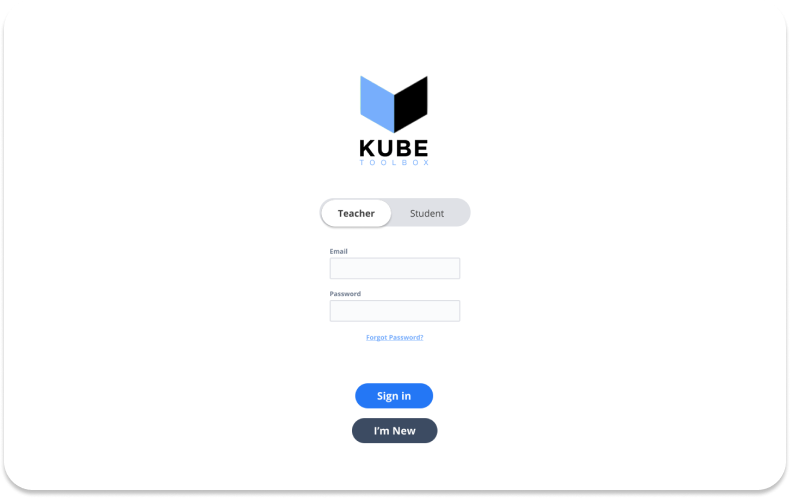
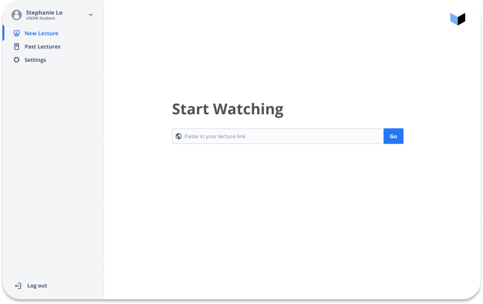
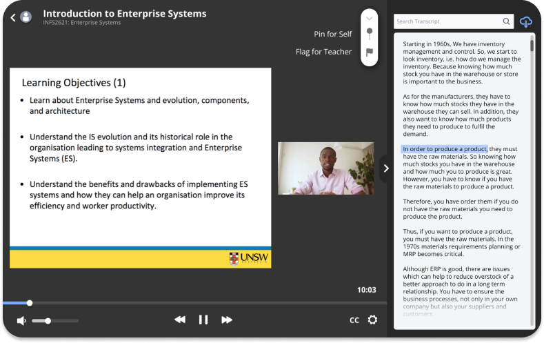
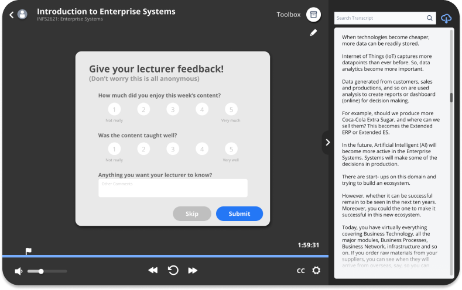
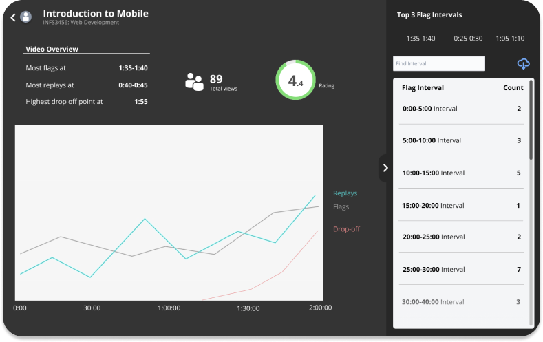
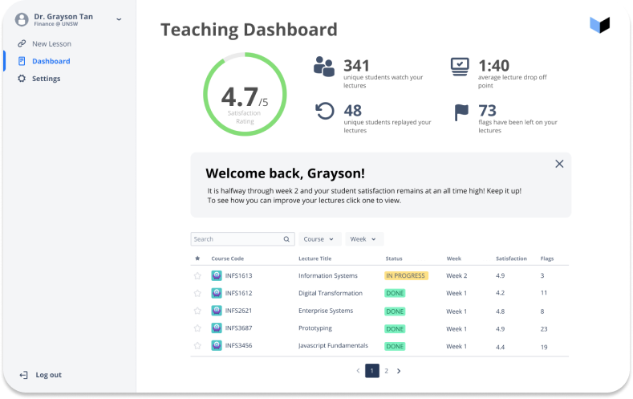

Kube Toolbox
The bridge between online students and teachers.

The Theme
Education is be inequitable and inaccessible for many students globally. Whether it be students learning in a second language or classes lacking in-person environments, there needs to be a bigger emphasis on redefining education beyond formalised settings by formulating more inclusive pathways.
How can we improve the quality of education across the world from a teacher standpoint?
The Solution
Kube Toolbox is a video viewing platform that allows students to flag sections in the lecture for the teacher to review, pin parts for self-review and even fill in an anonymous survey at the end of the lesson. And then the teachers will receive an email through Twilio Sendgrid that summarises the number of flags, replays, where the drop off points are and survey results as well.
The MVP
For Students
- Login
- Access lecture via link
- View lecture transcript
- Access toolbox for flagging and pinning
- Submit anonymous survey
For Teachers
- Login
- Generate and share lecture link
- View analytics dashboard
- View lecture metrics i.e. flags, replays, drop-offs
User Journey: The Student




User Journey: The Teacher


Impact
For international students, the lecture transcript solves a lot of language barriers to learning, making tertiary education more accessible to ESL students. Kube also guides educators to better their teaching strategies with a real-time, comprehensive feedback system and teacher reports sent weekly through Twilio. So overall, Kube would increase the graduation rate of ESL students as well as boost the satisfaction rate of many students as teachers would be better able to meet their learning needs.